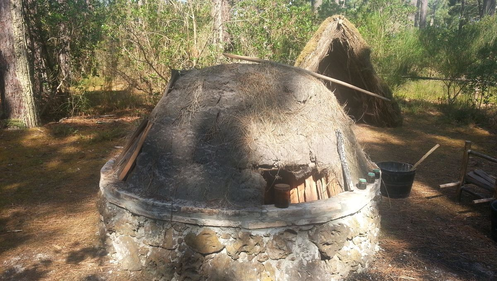
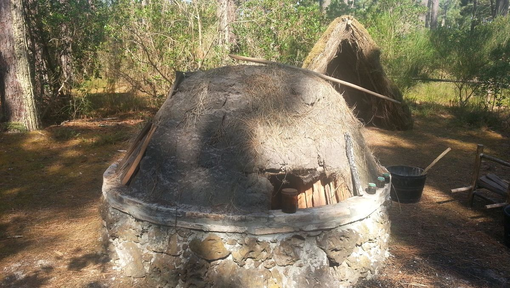
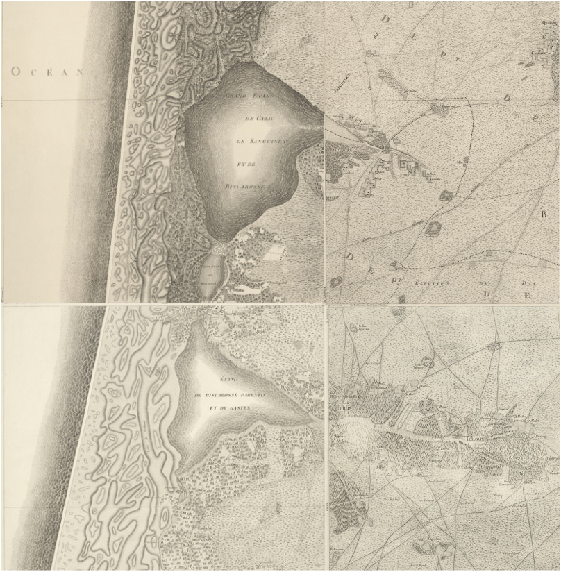
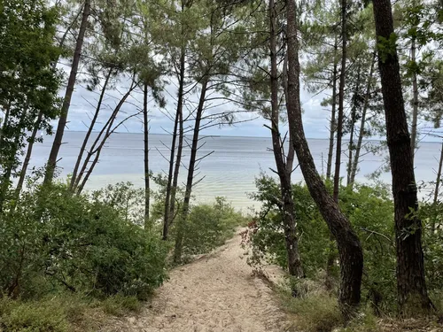
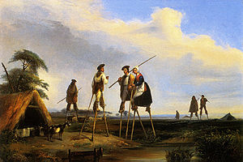
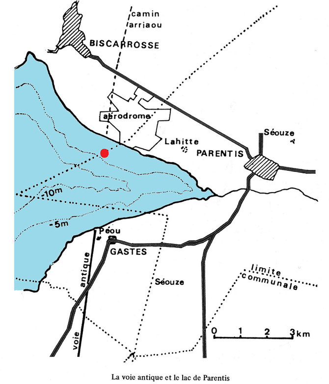
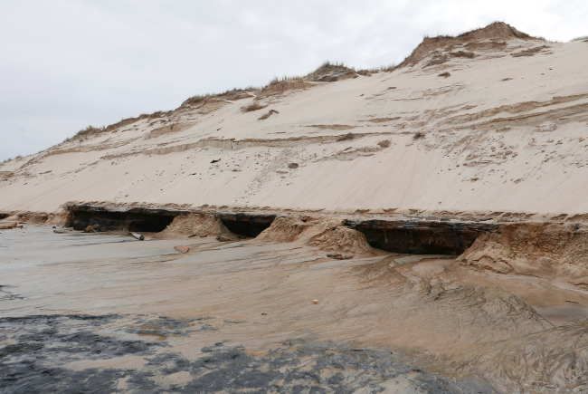

30 mars 2025
Des fouilles archéologiques sublacustres ont mis au jour depuis les années 1970 plusieurs villages englouttis sous les eaux du lac de Sanguinet-Cazaux. Aujourd'hui, un musée est dédié à ce patrimoine remarquable dans la ville de Sanguinet. On peut notamment y voir une pirogue médiévale.
 

Les sources écrites et l'archéologie montre une production importante de poix.

Si on sait que la forme des lacs a évoluer, il est intéressant de voir comment les cartographes médiévaux et modernes les représentaient.

La forêt de Biscarosse dispose de droits particuliers depuis 1277 et la charte du Prince Noir. Si elle est toujours en vigueur aujourd'hui, l'authencité de la première charte pose cependant question.

La loi relative à l'assainissement et à la mise en culture des Landes de Gascogne de 1857 marque de la fin de notre période d'étude puisque c'est le point marquant du changement de la manière de vivre dans les Landes.

Dans les années 90, un groupe d'archéologue découvre les traces d'une église englouttie à Parentis, mentionnée dans des sources écrites du XVIIe siècle. Mais ce n'est pas la seule ! A Cazaux, une église se cache sous une dune.

Pourquoi la forme et le niveau des lacs a-t-il évolué ? Pourquoi les dunes de sables bougent-elles ? Comment ce phénomène a-t-il été ralenti, voire stoppé ? Comment le paysage a-t-il évolué ?.